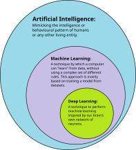
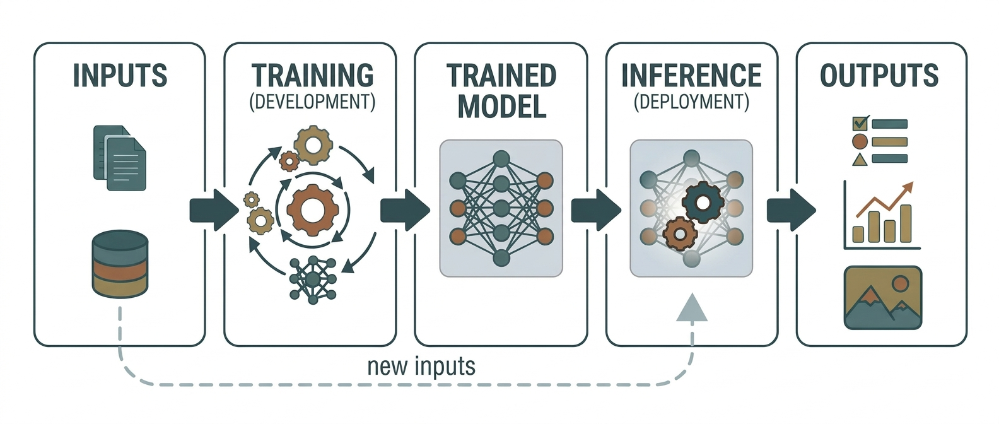

Module 0 · Foundations & Environment¶
Welcome. This is the friendly starting point for the course.
If HTTP, async programming, SQL, testing, or Docker are unfamiliar, complete Developer Environment & Programming Basics and the Engineering Core prerequisite track first.
You do not need advanced mathematics to begin. You need a clear mental model of what AI systems are, what an LLM does, and how a small application talks to one.
Why this matters¶
Once you understand the basic shape of an AI system, the later topics become easier to place. Retrieval gives a model access to useful information. Tools let it take actions. Evals tell us whether it worked. Production engineering makes the whole system reliable enough for real users.
What is AI?¶
Artificial intelligence (AI) is the broad field of building computer systems that perform tasks we associate with human intelligence: recognizing patterns, understanding language, making predictions, planning, or choosing an action.
AI is not one single technology. It is an umbrella term:
flowchart LR
AI["Artificial intelligence"] --> ML["Machine learning"]
ML --> DL["Deep learning"]
DL --> FM["Foundation models"]
FM --> LLM["Large language models"]
LLM --> Apps["AI applications"]Here is the same relationship as a real-world reference diagram:

Image credit: AI-ML-DL.svg.
Machine learning¶
In traditional programming, a person writes rules that transform inputs into outputs:
In machine learning, we give a system examples and let it learn patterns that help it produce outputs for new inputs:
The model is not “thinking” in the human sense. It is calculating a prediction from patterns learned during training.
Deep learning¶
Deep learning is machine learning built with large neural networks. Neural networks contain learned numbers called parameters. Modern language, image, audio, and video models are usually deep-learning systems.
Generative AI¶
Generative AI produces new content: text, code, images, audio, or video. Instead of only classifying an input as “spam” or “not spam,” a generative model can write an email, summarize a document, or generate an image.
What is an LLM?¶
An LLM, or large language model, is a deep-learning model trained on a very large collection of text and code. Its core job is to predict what token is likely to come next:
flowchart LR
Text["Text so far"] --> Tokens["Tokens"]
Tokens --> Model["Language model"]
Model --> Probabilities["Next-token probabilities"]
Probabilities --> Next["One selected token"]
Next --> TextFor example, after seeing:
the model assigns a high probability to the token Paris. It then repeats the process for the next token.
This simple description explains several important facts:
- The model can produce fluent language without guaranteeing that every fact is true.
- The model is sensitive to the words and examples in its context.
- Different sampling settings can produce different answers.
- A model can be useful without being a database, search engine, or source of truth.
Training versus using a model¶
There are two different activities:
| Activity | What happens | Who usually does it |
|---|---|---|
| Training | The model's parameters are adjusted using many examples | Model labs and research teams |
| Inference | The trained model generates an answer for a new request | Your application at runtime |
This training-to-inference split is also shown in the following workflow diagram:

Image credit: Workflow of a machine-learning-based AI system.
This course focuses on inference and application engineering. You will learn how to choose models, provide useful context, validate outputs, connect tools, evaluate behavior, and operate the result.
What happens when our app uses an LLM?¶
sequenceDiagram
participant U as User
participant A as Your application
participant P as Model provider
participant V as Validator
U->>A: Send question
A->>P: Prompt + context + settings
P-->>A: Stream or structured response
A->>V: Validate output
V-->>A: Accepted object or error
A-->>U: Useful responseYour code is the layer that makes the model useful and safe. It decides what to send, which model to use, what tools or data are available, how to validate the result, and what the user sees when something fails.
Tokens, context, and prompts¶
Tokens¶
A token is a small piece of text that the model reads or writes. A token may be a whole word, part of a word, punctuation, or whitespace. Token counts affect:
- API cost
- context-window limits
- response length
- latency
Do not worry about memorizing the exact tokenization rules yet. The practical rule is: longer input and longer output generally cost more and take longer.
Context window¶
The context window is the amount of text the model can consider for one request. It includes the instructions, conversation history, retrieved documents, tool results, and requested output.
When an application has more information than fits in context, it needs retrieval, summarization, memory, or another context-management strategy. That is why Module 3 matters.
Prompt¶
A prompt is the input we send to the model. It can include:
- instructions
- the user's question
- examples
- retrieved information
- tool results
- an output format or schema
Prompting is not magic wording. It is the first version of programming a probabilistic system.
What an LLM is not¶
An LLM is not automatically:
- a live search engine
- a reliable database
- a calculator
- an authorized application user
- a guaranteed source of truth
We connect the model to search, databases, calculators, APIs, and human approval when those capabilities are required. The model can decide how to use those capabilities, but the application must enforce the boundaries.
🔨 The build¶
builds/00-hello-llm — a Dockerized FastAPI service with two endpoints: one streams a model response token-by-token, the other returns a schema-validated object from free text.
New to API keys or environment variables? Read Developer Environment & Programming Basics first.
cd builds/00-hello-llm
cp .env.example .env # add ANTHROPIC_API_KEY
docker compose up --build # open http://localhost:8000
Run it before reading on. Many later artifacts are variations on these two moves, but some topics will stay as small snippets or local experiments.
What we built¶
A small service (app.py) that proves out two primitives you'll reuse everywhere:
POST /chat— streams the answer as it is generated.POST /extract— forces the model to fill a Pydantic schema (sentiment,topics,summary,action_required) and validates it before returning.
What it teaches through the build¶
- Streaming is a UX decision. Showing the first token quickly feels different from waiting for the complete response. Streaming also changes error handling because some bytes may already be sent.
- Structured output beats “please return JSON.” A schema gives downstream code a validated object instead of a hopeful parse of prose.
- The model is a configurable dependency. Changing
MODELlets you compare quality, latency, and cost without rewriting the application. - Validation is a trust boundary. Model output is untrusted until it passes the schema.
Baseline you need¶
Now reach for these concepts when the build makes them relevant:
- HTTP and streaming — requests, responses, status codes, and chunked output.
- Async and bounded concurrency — firing multiple calls without overwhelming a provider.
- Schemas at the boundary — Pydantic (Python) or Zod (TypeScript).
- Docker and Compose — enough to start, inspect, and stop a service.
- Cost/latency/quality — the recurring design tradeoff.
- Embeddings intuition — what a vector is; the deeper treatment arrives in Module 3.
Extend the build¶
- Run
00-hello-llmand hit both endpoints from the browser. - Add a
/classifyendpoint returning one enum label via a strict schema. - Fire 10
/extractcalls concurrently without tripping rate limits. - Switch
MODELto Haiku and describe the cost/latency/quality difference. - Explain why streaming changes error handling.
Checklist¶
- I can explain the difference between AI, machine learning, deep learning, and an LLM.
- I can explain training versus inference in plain language.
- I understand tokens, context windows, prompts, and why model output can be wrong.
- The build runs under Docker and I have torn it down cleanly.
- I can explain streaming and why it is a UX decision.
- I use schema validation for structured output instead of string parsing.
- I can state the cost/latency/quality tradeoff for a design.
- I extended the build with at least one new endpoint.
Resources¶
- The Developer Environment & Programming Basics setup guide.
- Anthropic API documentation — streaming and structured output sections.
- Karpathy's introductory LLM talks for intuition about tokens and next-token prediction.
- Pydantic (Python) or Zod (TypeScript) documentation.
- The build README — the model for every module's explain half.